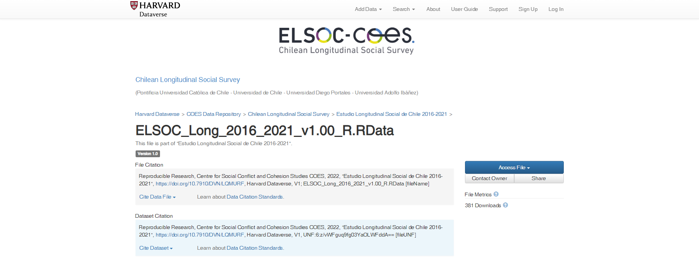
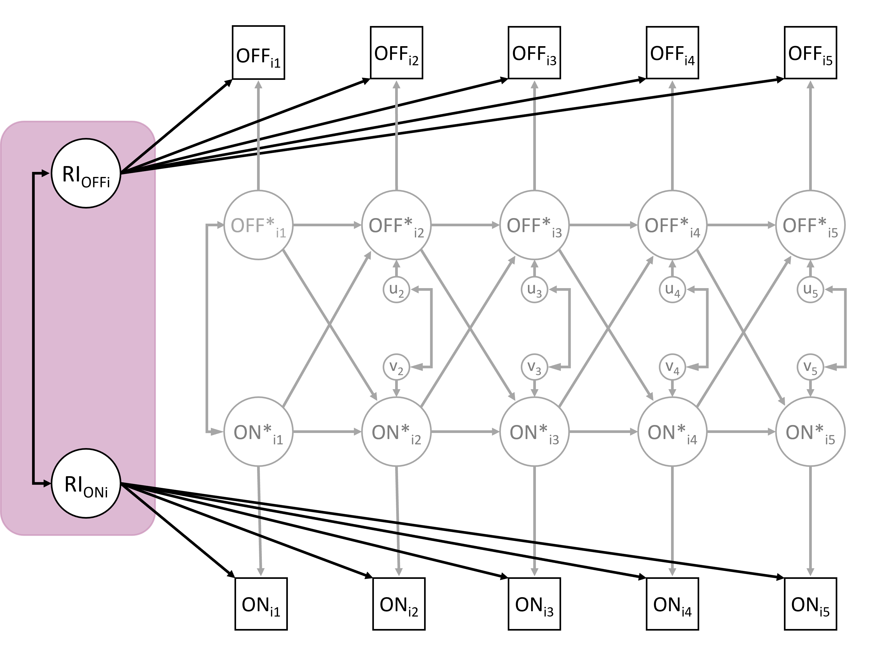
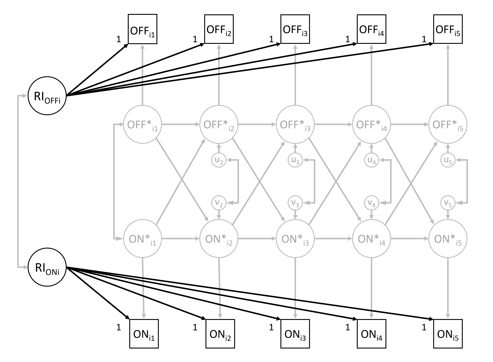

Bloque 2: Estimación en R
Curso: Modelos Cross-Lagged de Interceptos Aleatorios (RI-CLPM)
Escuela de Invierno ELSOC-COES
Pía Carozzi Lobos - pjcarozzi@uc.cl
2024-08-02
Contenidos
Modelo básico
Estimación
Estrategia analítica
Resultados e interpretación
Referencias
Modelo
Datos
Estudio Longitudinal Social de Chile (ELSOC).
5 Olas: 2016, 2017, 2018, 2019, 2021.
Articulo
Chayinska, Miranda & Gonzalez (2021). A longitudinal study of the bidirectional causal relationships between online political participation and offline collective action.

Articulo
Con datos de ELSOC, replicaremos los resultados de Chayinska, Miranda & Gonzalez (2021), usando las siguientes variables:
PARTICIPACION POLITICA ON-LINE:
“Durante los últimos 12 meses, ¿con cuánta frecuencia usted ha… Usado las redes sociales para expresar su opinión en temas públicos?”
1 = nunca a 5 = muy frecuentemente.
PARTICIPACION OFF-LINE EN ACCIONES COLECTIVAS:
“Durante los últimos 12 meses, ¿con cuánta frecuencia usted ha… Asistido a una marcha o manifestación política?”
1 = nunca a 5 = muy frecuentemente.
Componentes del modelo
- Variables observadas
\(OFF_{it}\)
Puntajes observados en participación off-line para el individuo \(i\) en la ola \(t\).
\(ON_{it}\)
Puntajes observados en participación online para el individuo \(i\) en la ola \(t\).
Componentes del modelo

- Componente between o inter-individual
\(RI_{OFFi}\)
Intercepto aleatorio de participación off-line para el individuo \(i\).
\(RI_{ONi}\)
Intercepto aleatorio de participación online para el individuo \(i\).
Componente between: desviaciones del individuo \(i\), en términos de su puntaje esperado, respecto a la gran media de cada variable.
Componentes del modelo
- Componente within o intra-individual
\(OFF^{*}_{it}\)
Desviaciones temporales en \(t\) del individuo \(i\) respecto a sus puntajes esperados en participación off-line.
\(ON^{*}_{it}\)
Desviaciones temporales en \(t\) del individuo \(i\) respecto a sus puntajes esperados en participación online.
Componente within: fluctuaciones intra-persona.
Componentes del modelo
- Componente within o intra-individual
\(OFF^{*}_{i1}\) y \(ON^{*}_{i1}\) son modelados como variables exógenas.
Supuesto: los componentes within están correlacionados entre si en cada \(t\).
\(u_{it}\) y \(v_{it}\) son los residuos.
Supuesto: los residuos \(u_{it}\) y \(v_{it}\) están normalmente distribuidos y correlacionados entre sí, dentro de cada tiempo \(t \geq 2\).
Estimación
lavaan
Rosseel (2012). lavaan: An R Package for Structural Equation Modeling.

Rosseel, Y. (2012). lavaan: An R Package for Structural Equation Modeling. Journal of Statistical Software, 48(2), 1–36.
Sintaxis de lavaan
En R, los RI-CLPM son estimados con la librería lavaan.
Sintaxis de modelo de lavaan y sus tipos de fórmula:
| Tipo | Operador | Mnemotecnia |
|---|---|---|
| Definición de variable latente | =~ | es medido por |
| Regresión | ~ | es predicho por |
| (co)varianza (residual) | ~~ | está correlacionado con |
| Intercepto | ~ 1 | intercepto |
Ejemplo sintaxis
La sintaxis de modelo de lavaan está constituida por una combinación de tipos de fórmula, cerrada por comillas simples.
Previo: Preparar datos
library(data.table)
# Data
load(url("https://dataverse.harvard.edu/api/access/datafile/6160173"))
setDT(elsoc_long_2016_2021)
elsoc_long_2016_2021 <- elsoc_long_2016_2021[muestra==1,]
# Long to wide
elsoc <- dcast(elsoc_long_2016_2021, idencuesta ~ ola,
value.var = c("c08_02","c08_04","m0_edad","m01","m0_sexo"))
# Select variables
old <- c("idencuesta",paste0("c08_02_",1:5),paste0("c08_04_",1:5),
"m0_edad_1","m01_1","m0_sexo_1")
new <- c("id",paste0("off",1:5),paste0("onl",1:5),"edad","educ","sexo")
setnames(elsoc,old,new)
elsoc <- elsoc[, ..new]
# Recode NAs
elsoc <- elsoc[, lapply(.SD, function(x) replace(x,
which(x %in% c(-666,-888,-999)), NA))]
# Cleaning workspace
rm(elsoc_long_2016_2021,old,new)
elsoc <- as.data.frame(elsoc)Descriptivos
| Mean | Std.Dev | Min | Median | Max | N.Valid | Pct.Valid | |
|---|---|---|---|---|---|---|---|
| off1 | 1.31 | 0.78 | 1.00 | 1.00 | 5.00 | 2922.00 | 99.80 |
| off2 | 1.22 | 0.64 | 1.00 | 1.00 | 5.00 | 2473.00 | 84.46 |
| off3 | 1.18 | 0.59 | 1.00 | 1.00 | 5.00 | 2227.00 | 76.06 |
| off4 | 1.50 | 0.99 | 1.00 | 1.00 | 5.00 | 2153.00 | 73.53 |
| off5 | 1.20 | 0.64 | 1.00 | 1.00 | 5.00 | 1739.00 | 59.39 |
| onl1 | 1.71 | 1.18 | 1.00 | 1.00 | 5.00 | 2918.00 | 99.66 |
| onl2 | 1.60 | 1.09 | 1.00 | 1.00 | 5.00 | 2473.00 | 84.46 |
| onl3 | 1.59 | 1.06 | 1.00 | 1.00 | 5.00 | 2225.00 | 75.99 |
| onl4 | 1.86 | 1.28 | 1.00 | 1.00 | 5.00 | 2153.00 | 73.53 |
| onl5 | 1.84 | 1.22 | 1.00 | 1.00 | 5.00 | 1739.00 | 59.39 |
| edad | 46.09 | 15.29 | 18.00 | 46.00 | 88.00 | 2927.00 | 99.97 |
| educ | 5.26 | 2.20 | 1.00 | 5.00 | 10.00 | 2925.00 | 99.90 |
| sexo | 1.60 | 0.49 | 1.00 | 2.00 | 2.00 | 2927.00 | 99.97 |
Estimación
La especificación del RI-CLPM cuenta con 4 partes:
Componente between, los interceptos aleatorios.
Componente within, fluctuaciones intra-individuos.
Regresiones entre los componentes within.
Covarianzas relevantes en los componentes between y within.
Componente between
Variables latentes, con las medidas repetidas en \(t\) como indicadores.
Cargas factoriales fijadas en 1.
Supuesto: Los interceptos aleatorios tienen igual influencia en cada ocasión

Componente within
Fluctuaciones intra-individuos
Variables latentes, explicadas por sus respectivas medidas observadas en cada ocasión.
Cargas factoriales fijadas
en 1.

within <- '
# Crear los componentes within
cx1 =~ 1*off1
cx2 =~ 1*off2
cx3 =~ 1*off3
cx4 =~ 1*off4
cx5 =~ 1*off5
cy1 =~ 1*onl1
cy2 =~ 1*onl2
cy3 =~ 1*onl3
cy4 =~ 1*onl4
cy5 =~ 1*onl5
# constreñir las varianzas del error de medicion a 0
off1 ~~ 0*off1
off2 ~~ 0*off2
off3 ~~ 0*off3
off4 ~~ 0*off4
off5 ~~ 0*off5
onl1 ~~ 0*onl1
onl2 ~~ 0*onl2
onl3 ~~ 0*onl3
onl4 ~~ 0*onl4
onl5 ~~ 0*onl5
'Efectos lagged
Covarianzas
Covarianzas relevantes en los componentes between y within.
Los componentes within están correlacionados en cada \(t\), tanto en la primera ola (exógena) como sus residuos desde la ola 2.
covarianzas <- '
# Covarianza entre los componentes within t=1
cx1 ~~ cy1
# Covarianzas entre los residuos componente within
cx2 ~~ cy2
cx3 ~~ cy3
cx4 ~~ cy4
cx5 ~~ cy5
# Varianzas residuales del componente within
cx1 ~~ cx1
cy1 ~~ cy1
cx2 ~~ cx2
cy2 ~~ cy2
cx3 ~~ cx3
cy3 ~~ cy3
cx4 ~~ cx4
cy4 ~~ cy4
cx5 ~~ cx5
cy5 ~~ cy5
# Varianza y covarianza entre RI
RI_x ~~ RI_x
RI_y ~~ RI_y
RI_x ~~ RI_y
# Correlacion entre los RI y componentes within t=1
RI_x ~~ 0*cx1
RI_x ~~ 0*cy1
RI_y ~~ 0*cx1
RI_y ~~ 0*cy1
'Covarianzas
Covarianzas relevantes en los componentes between y within.
Componente between, los interceptos aleatorios están correlacionados.
Componentes within en la primera ola y los interceptos aleatorios no están correlacionados.
covarianzas <- '
# Covarianza entre los componentes within t=1
cx1 ~~ cy1
# Covarianzas entre los residuos componente within
cx2 ~~ cy2
cx3 ~~ cy3
cx4 ~~ cy4
cx5 ~~ cy5
# Varianzas residuales del componente within
cx1 ~~ cx1
cy1 ~~ cy1
cx2 ~~ cx2
cy2 ~~ cy2
cx3 ~~ cx3
cy3 ~~ cy3
cx4 ~~ cx4
cy4 ~~ cy4
cx5 ~~ cx5
cy5 ~~ cy5
# Varianza y covarianza entre RI
RI_x ~~ RI_x
RI_y ~~ RI_y
RI_x ~~ RI_y
# Correlacion entre los RI y componentes within t=1
RI_x ~~ 0*cx1
RI_x ~~ 0*cy1
RI_y ~~ 0*cx1
RI_y ~~ 0*cy1
'Modelo basico de RI-CLPM
modelo_lavaan <- '
# Crear los componentes between
RI_x =~ 1*off1 + 1*off2 + 1*off3 + 1*off4 + 1*off5
RI_y =~ 1*onl1 + 1*onl2 + 1*onl3 + 1*onl4 + 1*onl5
# Crear los componentes within
cx1 =~ 1*off1
cx2 =~ 1*off2
cx3 =~ 1*off3
cx4 =~ 1*off4
cx5 =~ 1*off5
cy1 =~ 1*onl1
cy2 =~ 1*onl2
cy3 =~ 1*onl3
cy4 =~ 1*onl4
cy5 =~ 1*onl5
# constreñir las varianzas del error de medicion a cero
off1 ~~ 0*off1
off2 ~~ 0*off2
off3 ~~ 0*off3
off4 ~~ 0*off4
off5 ~~ 0*off5
onl1 ~~ 0*onl1
onl2 ~~ 0*onl2
onl3 ~~ 0*onl3
onl4 ~~ 0*onl4
onl5 ~~ 0*onl5
# Estimar los efectos lagged
cx2 ~ cx1 + cy1
cx3 ~ cx2 + cy2
cx4 ~ cx3 + cy3
cx5 ~ cx4 + cy4
cy2 ~ cx1 + cy1
cy3 ~ cx2 + cy2
cy4 ~ cx3 + cy3
cy5 ~ cx4 + cy4
# Estimar la covarianza entre los componentes within t=1
cx1 ~~ cy1
# Estimar las covarianzas entre los residuos del componente within
cx2 ~~ cy2
cx3 ~~ cy3
cx4 ~~ cy4
cx5 ~~ cy5
# Estimar las varianzas residuales del componente within
cx1 ~~ cx1 # Varianzas
cy1 ~~ cy1
cx2 ~~ cx2 # Varianzas residuales
cy2 ~~ cy2
cx3 ~~ cx3
cy3 ~~ cy3
cx4 ~~ cx4
cy4 ~~ cy4
cx5 ~~ cx5
cy5 ~~ cy5
# Estimar la varianza y covarianza entre los RI.
RI_x ~~ RI_x
RI_y ~~ RI_y
RI_x ~~ RI_y
# Fijar la correlacion entre los RI y componentes within t=1 a cero
RI_x ~~ 0*cx1
RI_x ~~ 0*cy1
RI_y ~~ 0*cx1
RI_y ~~ 0*cy1
'Estimación
Estimamos el objeto modelo_lavaan usando la función lavaan()
Estimación
El estimador default de lavaan es maximum likelihood (estimator = "ML"), pero podemos especificar otros estimadores alternativos disponibles en lavaan (GLS, WLS, DWLS, ULS, DLS, PML, etc.).
En este caso, usamos una estimación de maximum likelihood con errores estándar robustos (Huber-White) y estadísticos de prueba escalados (equivalentes a los estadísticos de prueba de Yuan-Bentler).
El comportamiento default de lavaan ante valores perdidos es listwise deletion.
Si los datos son MCAR (missing completely at random) o MAR (missing at random), podemos estimar caso a caso usando full information maximum likelihood para lidiar con los casos perdidos.
Output
lavaan 0.6.17 ended normally after 49 iterations
Estimator ML
Optimization method NLMINB
Number of model parameters 44
Used Total
Number of observations 2927 2928
Number of missing patterns 23
Model Test User Model:
Standard Scaled
Test Statistic 254.515 144.094
Degrees of freedom 21 21
P-value (Chi-square) 0.000 0.000
Scaling correction factor 1.766
Yuan-Bentler correction (Mplus variant)
Model Test Baseline Model:
Test statistic 6864.635 3632.030
Degrees of freedom 45 45
P-value 0.000 0.000
Scaling correction factor 1.890
User Model versus Baseline Model:
Comparative Fit Index (CFI) 0.966 0.966
Tucker-Lewis Index (TLI) 0.927 0.926
Robust Comparative Fit Index (CFI) 0.964
Robust Tucker-Lewis Index (TLI) 0.923
Loglikelihood and Information Criteria:
Loglikelihood user model (H0) -27262.196 -27262.196
Scaling correction factor 2.089
for the MLR correction
Loglikelihood unrestricted model (H1) -27134.938 -27134.938
Scaling correction factor 1.985
for the MLR correction
Akaike (AIC) 54612.392 54612.392
Bayesian (BIC) 54875.589 54875.589
Sample-size adjusted Bayesian (SABIC) 54735.784 54735.784
Root Mean Square Error of Approximation:
RMSEA 0.062 0.045
90 Percent confidence interval - lower 0.055 0.040
90 Percent confidence interval - upper 0.069 0.050
P-value H_0: RMSEA <= 0.050 0.002 0.949
P-value H_0: RMSEA >= 0.080 0.000 0.000
Robust RMSEA 0.074
90 Percent confidence interval - lower 0.062
90 Percent confidence interval - upper 0.085
P-value H_0: Robust RMSEA <= 0.050 0.000
P-value H_0: Robust RMSEA >= 0.080 0.191
Standardized Root Mean Square Residual:
SRMR 0.061 0.061
Parameter Estimates:
Standard errors Sandwich
Information bread Observed
Observed information based on Hessian
Latent Variables:
Estimate Std.Err z-value P(>|z|) ci.lower ci.upper
RI_x =~
off1 1.000 1.000 1.000
off2 1.000 1.000 1.000
off3 1.000 1.000 1.000
off4 1.000 1.000 1.000
off5 1.000 1.000 1.000
RI_y =~
onl1 1.000 1.000 1.000
onl2 1.000 1.000 1.000
onl3 1.000 1.000 1.000
onl4 1.000 1.000 1.000
onl5 1.000 1.000 1.000
cx1 =~
off1 1.000 1.000 1.000
cx2 =~
off2 1.000 1.000 1.000
cx3 =~
off3 1.000 1.000 1.000
cx4 =~
off4 1.000 1.000 1.000
cx5 =~
off5 1.000 1.000 1.000
cy1 =~
onl1 1.000 1.000 1.000
cy2 =~
onl2 1.000 1.000 1.000
cy3 =~
onl3 1.000 1.000 1.000
cy4 =~
onl4 1.000 1.000 1.000
cy5 =~
onl5 1.000 1.000 1.000
Std.lv Std.all
0.373 0.492
0.373 0.577
0.373 0.625
0.373 0.395
0.373 0.557
0.739 0.631
0.739 0.676
0.739 0.691
0.739 0.595
0.739 0.620
0.659 0.871
0.527 0.817
0.465 0.781
0.866 0.919
0.555 0.830
0.908 0.776
0.804 0.737
0.772 0.723
0.998 0.804
0.936 0.785
Regressions:
Estimate Std.Err z-value P(>|z|) ci.lower ci.upper
cx2 ~
cx1 0.138 0.042 3.307 0.001 0.056 0.219
cy1 -0.023 0.020 -1.131 0.258 -0.063 0.017
cx3 ~
cx2 0.138 0.056 2.448 0.014 0.027 0.248
cy2 -0.024 0.024 -1.032 0.302 -0.071 0.022
cx4 ~
cx3 0.241 0.084 2.870 0.004 0.077 0.406
cy3 0.134 0.041 3.288 0.001 0.054 0.213
cx5 ~
cx4 0.175 0.031 5.698 0.000 0.115 0.235
cy4 0.029 0.021 1.401 0.161 -0.012 0.070
cy2 ~
cx1 0.007 0.046 0.150 0.881 -0.084 0.098
cy1 -0.001 0.036 -0.040 0.968 -0.072 0.069
cy3 ~
cx2 0.113 0.066 1.711 0.087 -0.016 0.241
cy2 0.075 0.043 1.724 0.085 -0.010 0.160
cy4 ~
cx3 0.006 0.077 0.076 0.940 -0.146 0.158
cy3 0.253 0.048 5.286 0.000 0.159 0.346
cy5 ~
cx4 0.097 0.033 2.926 0.003 0.032 0.162
cy4 0.297 0.033 8.879 0.000 0.231 0.362
Std.lv Std.all
0.172 0.172
-0.039 -0.039
0.156 0.156
-0.042 -0.042
0.130 0.130
0.119 0.119
0.273 0.273
0.052 0.052
0.006 0.006
-0.002 -0.002
0.077 0.077
0.078 0.078
0.003 0.003
0.195 0.195
0.090 0.090
0.317 0.317
Covariances:
Estimate Std.Err z-value P(>|z|) ci.lower ci.upper
cx1 ~~
cy1 0.163 0.024 6.894 0.000 0.116 0.209
.cx2 ~~
.cy2 0.111 0.020 5.613 0.000 0.072 0.150
.cx3 ~~
.cy3 0.062 0.018 3.535 0.000 0.028 0.097
.cx4 ~~
.cy4 0.244 0.029 8.431 0.000 0.187 0.300
.cx5 ~~
.cy5 0.022 0.017 1.250 0.211 -0.012 0.056
RI_x ~~
RI_y 0.183 0.018 9.926 0.000 0.147 0.219
cx1 0.000 0.000 0.000
cy1 0.000 0.000 0.000
RI_y ~~
cx1 0.000 0.000 0.000
cy1 0.000 0.000 0.000
Std.lv Std.all
0.272 0.272
0.266 0.266
0.176 0.176
0.293 0.293
0.047 0.047
0.664 0.664
0.000 0.000
0.000 0.000
0.000 0.000
0.000 0.000
Intercepts:
Estimate Std.Err z-value P(>|z|) ci.lower ci.upper
.off1 1.313 0.014 91.514 0.000 1.285 1.341
.off2 1.217 0.013 95.154 0.000 1.192 1.243
.off3 1.189 0.012 96.373 0.000 1.164 1.213
.off4 1.501 0.021 72.073 0.000 1.460 1.542
.off5 1.189 0.014 84.928 0.000 1.161 1.216
.onl1 1.714 0.022 78.689 0.000 1.671 1.756
.onl2 1.609 0.022 74.560 0.000 1.566 1.651
.onl3 1.607 0.022 73.666 0.000 1.564 1.649
.onl4 1.865 0.027 70.135 0.000 1.813 1.917
.onl5 1.816 0.027 67.613 0.000 1.763 1.868
Std.lv Std.all
1.313 1.734
1.217 1.886
1.189 1.994
1.501 1.592
1.189 1.778
1.714 1.464
1.609 1.473
1.607 1.504
1.865 1.502
1.816 1.523
Variances:
Estimate Std.Err z-value P(>|z|) ci.lower ci.upper
.off1 0.000 0.000 0.000
.off2 0.000 0.000 0.000
.off3 0.000 0.000 0.000
.off4 0.000 0.000 0.000
.off5 0.000 0.000 0.000
.onl1 0.000 0.000 0.000
.onl2 0.000 0.000 0.000
.onl3 0.000 0.000 0.000
.onl4 0.000 0.000 0.000
.onl5 0.000 0.000 0.000
cx1 0.435 0.030 14.387 0.000 0.375 0.494
cy1 0.824 0.036 22.643 0.000 0.753 0.896
.cx2 0.270 0.022 12.180 0.000 0.227 0.314
.cy2 0.647 0.038 17.004 0.000 0.572 0.722
.cx3 0.212 0.021 9.857 0.000 0.170 0.254
.cy3 0.587 0.033 17.737 0.000 0.522 0.652
.cx4 0.723 0.037 19.525 0.000 0.650 0.795
.cy4 0.958 0.039 24.393 0.000 0.881 1.035
.cx5 0.282 0.026 10.931 0.000 0.231 0.332
.cy5 0.765 0.038 20.171 0.000 0.691 0.839
RI_x 0.139 0.019 7.377 0.000 0.102 0.176
RI_y 0.546 0.030 18.456 0.000 0.488 0.604
Std.lv Std.all
0.000 0.000
0.000 0.000
0.000 0.000
0.000 0.000
0.000 0.000
0.000 0.000
0.000 0.000
0.000 0.000
0.000 0.000
0.000 0.000
1.000 1.000
1.000 1.000
0.973 0.973
1.000 1.000
0.977 0.977
0.985 0.985
0.963 0.963
0.962 0.962
0.914 0.914
0.874 0.874
1.000 1.000
1.000 1.000Estrategia analítica
Hipótesis


Modelos anidados
La estimación usualmente sigue una estrategia de modelos anidados entre los cuales se compara su bondad de ajuste.
Para testear las hipótesis en torno a la direccionalidad de las relaciones estimamos:
MODELO A: sólo los paths autorregresivos.
MODELO B: paths autorregresivos + cross-lagged (forward).
MODELO C: paths autorregresivos + cross-lagged (backward).
MODELO D bidireccional, paths autorregresivos + cross-lagged.
Para testear la estabilidad de los efectos entre los constructos en el tiempo, adicionalmente, comparamos dos versiones de cada uno de estos modelos: Una versión estimada libremente (1) y una versión constriñendo los efectos en el tiempo (2).
Modelos anidados: sintaxis
En lavaan, las restricciones al modelo se realizan usando una sintaxis de pre-multiplicación:
Se agrega a cada parámetro un numero al cual queremos fijarlo o una etiqueta, junto a un asterisco, y luego se indica el parámetro en la especificación del modelo.
Para constreñir la igualdad entre parámetros se usa el mismo numero o la misma etiqueta.
Volvamos al modelo básico…
Los modelos A, B, C y D comparten la misma especificación del componente between, componente within y covarianzas.
bwcomp <- '
# Crear los componentes between
RI_x =~ 1*off1 + 1*off2 + 1*off3 + 1*off4 + 1*off5
RI_y =~ 1*onl1 + 1*onl2 + 1*onl3 + 1*onl4 + 1*onl5
# Crear los componentes within
cx1 =~ 1*off1
cx2 =~ 1*off2
cx3 =~ 1*off3
cx4 =~ 1*off4
cx5 =~ 1*off5
cy1 =~ 1*onl1
cy2 =~ 1*onl2
cy3 =~ 1*onl3
cy4 =~ 1*onl4
cy5 =~ 1*onl5
# constreñir las varianzas del error de medicion a cero
off1 ~~ 0*off1
off2 ~~ 0*off2
off3 ~~ 0*off3
off4 ~~ 0*off4
off5 ~~ 0*off5
onl1 ~~ 0*onl1
onl2 ~~ 0*onl2
onl3 ~~ 0*onl3
onl4 ~~ 0*onl4
onl5 ~~ 0*onl5
'Volvamos al modelo básico…
Los modelos A, B, C y D comparten la misma especificación del componente between, componente within y covarianzas.
varcov <- '
# Estimar la covarianza entre los componentes within t=1
cx1 ~~ cy1
# Estimar las covarianzas entre los residuos del componente within
cx2 ~~ cy2
cx3 ~~ cy3
cx4 ~~ cy4
cx5 ~~ cy5
# Estimar las varianzas residuales del componente within
cx1 ~~ cx1 # Varianzas
cy1 ~~ cy1
cx2 ~~ cx2 # Varianzas residuales
cy2 ~~ cy2
cx3 ~~ cx3
cy3 ~~ cy3
cx4 ~~ cx4
cy4 ~~ cy4
cx5 ~~ cx5
cy5 ~~ cy5
# Estimar la varianza y covarianza entre los RI.
RI_x ~~ RI_x
RI_y ~~ RI_y
RI_x ~~ RI_y
# Fijar la correlacion entre los RI y componentes within t=1 a cero
RI_x ~~ 0*cx1
RI_x ~~ 0*cy1
RI_y ~~ 0*cx1
RI_y ~~ 0*cy1
'Efectos: Modelo A
Efectos: Modelo A
Efectos: Modelo B
Modelo B unidireccional (forward),
sin constreñir
Efectos: Modelo B
Modelo B unidireccional (forward),
contreñido
Efectos: Modelo C
Modelo C unidireccional (backward),
sin contreñir
Efectos: Modelo C
Modelo C unidireccional (backward),
constreñido
Efectos: Modelo D
Modelo D bidireccional,
sin constreñir

d1 <- ' # Sin constreñir
cx2 ~ cx1 + cy1
cx3 ~ cx2 + cy2
cx4 ~ cx3 + cy3
cx5 ~ cx4 + cy4
cy2 ~ cx1 + cy1
cy3 ~ cx2 + cy2
cy4 ~ cx3 + cy3
cy5 ~ cx4 + cy4
'
d2 <- ' # Constreñido
cx2 ~ a*cx1 + b*cy1
cx3 ~ a*cx2 + b*cy2
cx4 ~ a*cx3 + b*cy3
cx5 ~ a*cx4 + b*cy4
cy2 ~ c*cx1 + d*cy1
cy3 ~ c*cx2 + d*cy2
cy4 ~ c*cx3 + d*cy3
cy5 ~ c*cx4 + d*cy4
'Efectos: Modelo D
Modelo D bidireccional,
constreñido
d1 <- ' # Sin constreñir
cx2 ~ cx1 + cy1
cx3 ~ cx2 + cy2
cx4 ~ cx3 + cy3
cx5 ~ cx4 + cy4
cy2 ~ cx1 + cy1
cy3 ~ cx2 + cy2
cy4 ~ cx3 + cy3
cy5 ~ cx4 + cy4
'
d2 <- ' # Constreñido
cx2 ~ a*cx1 + b*cy1
cx3 ~ a*cx2 + b*cy2
cx4 ~ a*cx3 + b*cy3
cx5 ~ a*cx4 + b*cy4
cy2 ~ c*cx1 + d*cy1
cy3 ~ c*cx2 + d*cy2
cy4 ~ c*cx3 + d*cy3
cy5 ~ c*cx4 + d*cy4
'Estimación
Bondad de ajuste
Extraemos las medidas de ajuste usando la función fitMeasures.
gofdt <- list()
for (i in names(fit)){
x <- fitMeasures(fit[[i]])[c("chisq.scaled", "df.scaled",
"pvalue.scaled", "cfi.scaled",
"tli.scaled", "rmsea.scaled",
"srmr_mplus", "aic",
"bic", "bic2",
"logl", "npar",
"scaling.factor.h0")]
gofdt[[i]] <- setNames(as.numeric(x),
c("X2","df",
"pvalue","CFI",
"TLI","RMSEA",
"SRMR","AIC",
"BIC","aBIC",
"LL","par",
"LLcorrectf"))}
gofdt <- data.table(m=names(gofdt),dplyr::bind_rows(gofdt))Bondad de ajuste
Extraemos las medidas de ajuste usando la función fitMeasures.
| m | X2 | df | pvalue | CFI | TLI | RMSEA | SRMR | AIC | BIC | aBIC | LL | par | LLcorrectf |
|---|---|---|---|---|---|---|---|---|---|---|---|---|---|
| a1 | 171.31 | 29 | 0 | 0.96 | 0.94 | 0.04 | 0.06 | 54636.95 | 54852.29 | 54737.91 | -27282.47 | 36 | 2.20 |
| a2 | 202.25 | 35 | 0 | 0.95 | 0.94 | 0.04 | 0.07 | 54697.19 | 54876.64 | 54781.32 | -27318.60 | 30 | 1.82 |
| b1 | 161.48 | 25 | 0 | 0.96 | 0.93 | 0.04 | 0.06 | 54631.73 | 54871.00 | 54743.91 | -27275.87 | 40 | 2.13 |
| b2 | 197.36 | 34 | 0 | 0.95 | 0.94 | 0.04 | 0.07 | 54691.56 | 54876.99 | 54778.49 | -27314.78 | 31 | 1.68 |
| c1 | 154.38 | 25 | 0 | 0.96 | 0.94 | 0.04 | 0.06 | 54620.69 | 54859.96 | 54732.86 | -27270.34 | 40 | 2.13 |
| c2 | 200.90 | 34 | 0 | 0.95 | 0.94 | 0.04 | 0.07 | 54698.89 | 54884.32 | 54785.82 | -27318.44 | 31 | 1.67 |
| d1 | 144.09 | 21 | 0 | 0.97 | 0.93 | 0.04 | 0.06 | 54612.39 | 54875.59 | 54735.78 | -27262.20 | 44 | 2.09 |
| d2 | 195.39 | 33 | 0 | 0.95 | 0.94 | 0.04 | 0.07 | 54691.65 | 54883.07 | 54781.39 | -27313.83 | 32 | 1.56 |
Comparacion de modelos
gof.comp = function(data, pairs, measures = c("CFI", "TLI", "RMSEA", "SRMR", "AIC",
"BIC", "aBIC", "par", "LL")){
comp <- list()
for (i in 1:length(pairs)){
gof <- data
nest <- pairs[[i]][1]
full <- pairs[[i]][2]
delta <- NULL
for (k in measures){
delta[paste0(k,"_D")] <- gof[m==nest, get(k)] - gof[m==full, get(k)] }
par_LLcorf_nest <- gof[m==nest,par]*gof[m==nest,LLcorrectf]
par_LLcorf_full <- gof[m==full,par]*gof[m==full,LLcorrectf]
delta["CD"] <- (par_LLcorf_nest-par_LLcorf_full)/delta["par_D"]
delta["TRd"] <- (-2*delta["LL_D"])/delta["CD"]
delta["TRd_df"] <- gof[m==full, "par"] - gof[m==nest, "par"]
delta["TRd_pvalue"] <- pchisq(as.numeric(delta["TRd"]),
as.numeric(delta["TRd_df"]), lower.tail = F)
comp[[paste0(nest," vs. ",full,sep="")]] <- delta }
comp <- data.table(comp=names(comp),dplyr::bind_rows(comp))
return(comp)
}Comparacion de modelos
Modelos 1 y 2: Testear si los efectos son iguales en el tiempo.
comp1 <- gof.comp(data = gofdt,
pairs = list(c("a2","a1"), c("b2","b1"), c("c2","c1"), c("d2","d1")))
kableExtra::kable(comp1, digits = 3,
format = "html", table.attr = "style='font-size: 18px;'")| comp | CFI_D | TLI_D | RMSEA_D | SRMR_D | AIC_D | BIC_D | aBIC_D | par_D | LL_D | CD | TRd | TRd_df | TRd_pvalue |
|---|---|---|---|---|---|---|---|---|---|---|---|---|---|
| a2 vs. a1 | -0.007 | 0.002 | -0.001 | 0.008 | 60.242 | 24.351 | 43.416 | -6 | -36.121 | 4.086 | 17.679 | 6 | 0.007 |
| b2 vs. b1 | -0.007 | 0.008 | -0.003 | 0.009 | 59.828 | 5.993 | 34.589 | -9 | -38.914 | 3.712 | 20.965 | 9 | 0.013 |
| c2 vs. c1 | -0.010 | 0.003 | -0.001 | 0.010 | 78.201 | 24.365 | 52.961 | -9 | -48.100 | 3.701 | 25.995 | 9 | 0.002 |
| d2 vs. d1 | -0.011 | 0.012 | -0.004 | 0.012 | 79.259 | 7.478 | 45.607 | -12 | -51.630 | 3.503 | 29.480 | 12 | 0.003 |
Comparacion de modelos
Modelos A-D: Testear dirección de las relaciones.
comp2 <- gof.comp(data = gofdt,
pairs = list(c("a2","b2"), c("a2","c2"), c("a2","d2"),
c("b2","d2"), c("c2","d2")))
kableExtra::kable(comp2, digits = 3,
format = "html", table.attr = "style='font-size: 18px;'")| comp | CFI_D | TLI_D | RMSEA_D | SRMR_D | AIC_D | BIC_D | aBIC_D | par_D | LL_D | CD | TRd | TRd_df | TRd_pvalue |
|---|---|---|---|---|---|---|---|---|---|---|---|---|---|
| a2 vs. b2 | -0.001 | 0.000 | 0.000 | 0.001 | 5.632 | -0.350 | 2.827 | -1 | -3.816 | -2.577 | -2.961 | 1 | 1 |
| a2 vs. c2 | 0.000 | 0.002 | -0.001 | 0.000 | -1.696 | -7.678 | -4.500 | -1 | -0.152 | -2.692 | -0.113 | 1 | 1 |
| a2 vs. d2 | -0.001 | 0.002 | -0.001 | 0.001 | 5.540 | -6.424 | -0.069 | -2 | -4.770 | -2.328 | -4.097 | 2 | 1 |
| b2 vs. d2 | 0.000 | 0.001 | 0.000 | 0.000 | -0.092 | -6.074 | -2.896 | -1 | -0.954 | -2.079 | -0.918 | 1 | 1 |
| c2 vs. d2 | -0.001 | 0.000 | 0.000 | 0.001 | 7.235 | 1.254 | 4.431 | -1 | -4.618 | -1.964 | -4.702 | 1 | 1 |
Interpretación
Intrepretación
lhs op rhs label est se z pvalue ci.lower ci.upper
1 RI_x =~ off1 1.000 0.000 NA NA 1.000 1.000
2 RI_x =~ off2 1.000 0.000 NA NA 1.000 1.000
3 RI_x =~ off3 1.000 0.000 NA NA 1.000 1.000
4 RI_x =~ off4 1.000 0.000 NA NA 1.000 1.000
5 RI_x =~ off5 1.000 0.000 NA NA 1.000 1.000
6 RI_y =~ onl1 1.000 0.000 NA NA 1.000 1.000
7 RI_y =~ onl2 1.000 0.000 NA NA 1.000 1.000
8 RI_y =~ onl3 1.000 0.000 NA NA 1.000 1.000
9 RI_y =~ onl4 1.000 0.000 NA NA 1.000 1.000
10 RI_y =~ onl5 1.000 0.000 NA NA 1.000 1.000
11 cx1 =~ off1 1.000 0.000 NA NA 1.000 1.000
12 cx2 =~ off2 1.000 0.000 NA NA 1.000 1.000
13 cx3 =~ off3 1.000 0.000 NA NA 1.000 1.000
14 cx4 =~ off4 1.000 0.000 NA NA 1.000 1.000
15 cx5 =~ off5 1.000 0.000 NA NA 1.000 1.000
16 cy1 =~ onl1 1.000 0.000 NA NA 1.000 1.000
17 cy2 =~ onl2 1.000 0.000 NA NA 1.000 1.000
18 cy3 =~ onl3 1.000 0.000 NA NA 1.000 1.000
19 cy4 =~ onl4 1.000 0.000 NA NA 1.000 1.000
20 cy5 =~ onl5 1.000 0.000 NA NA 1.000 1.000
21 off1 ~~ off1 0.000 0.000 NA NA 0.000 0.000
22 off2 ~~ off2 0.000 0.000 NA NA 0.000 0.000
23 off3 ~~ off3 0.000 0.000 NA NA 0.000 0.000
24 off4 ~~ off4 0.000 0.000 NA NA 0.000 0.000
25 off5 ~~ off5 0.000 0.000 NA NA 0.000 0.000
26 onl1 ~~ onl1 0.000 0.000 NA NA 0.000 0.000
27 onl2 ~~ onl2 0.000 0.000 NA NA 0.000 0.000
28 onl3 ~~ onl3 0.000 0.000 NA NA 0.000 0.000
29 onl4 ~~ onl4 0.000 0.000 NA NA 0.000 0.000
30 onl5 ~~ onl5 0.000 0.000 NA NA 0.000 0.000
31 cx2 ~ cx1 a 0.155 0.025 6.291 0.000 0.107 0.203
32 cx2 ~ cy1 b 0.013 0.011 1.113 0.266 -0.010 0.035
33 cx3 ~ cx2 a 0.155 0.025 6.291 0.000 0.107 0.203
34 cx3 ~ cy2 b 0.013 0.011 1.113 0.266 -0.010 0.035
35 cx4 ~ cx3 a 0.155 0.025 6.291 0.000 0.107 0.203
36 cx4 ~ cy3 b 0.013 0.011 1.113 0.266 -0.010 0.035
37 cx5 ~ cx4 a 0.155 0.025 6.291 0.000 0.107 0.203
38 cx5 ~ cy4 b 0.013 0.011 1.113 0.266 -0.010 0.035
39 cy2 ~ cx1 c 0.061 0.026 2.364 0.018 0.010 0.112
40 cy2 ~ cy1 d 0.142 0.023 6.123 0.000 0.097 0.187
41 cy3 ~ cx2 c 0.061 0.026 2.364 0.018 0.010 0.112
42 cy3 ~ cy2 d 0.142 0.023 6.123 0.000 0.097 0.187
43 cy4 ~ cx3 c 0.061 0.026 2.364 0.018 0.010 0.112
44 cy4 ~ cy3 d 0.142 0.023 6.123 0.000 0.097 0.187
45 cy5 ~ cx4 c 0.061 0.026 2.364 0.018 0.010 0.112
46 cy5 ~ cy4 d 0.142 0.023 6.123 0.000 0.097 0.187
47 cx1 ~~ cy1 0.177 0.022 7.974 0.000 0.134 0.221
48 cx2 ~~ cy2 0.134 0.018 7.413 0.000 0.099 0.170
49 cx3 ~~ cy3 0.061 0.016 3.796 0.000 0.030 0.093
50 cx4 ~~ cy4 0.222 0.029 7.672 0.000 0.165 0.278
51 cx5 ~~ cy5 0.008 0.017 0.491 0.624 -0.025 0.042
52 cx1 ~~ cx1 0.439 0.028 15.553 0.000 0.383 0.494
53 cy1 ~~ cy1 0.876 0.037 23.916 0.000 0.805 0.948
54 cx2 ~~ cx2 0.278 0.021 13.374 0.000 0.237 0.318
55 cy2 ~~ cy2 0.733 0.036 20.166 0.000 0.662 0.805
56 cx3 ~~ cx3 0.214 0.020 10.547 0.000 0.174 0.254
57 cy3 ~~ cy3 0.578 0.032 18.092 0.000 0.515 0.640
58 cx4 ~~ cx4 0.715 0.037 19.141 0.000 0.642 0.789
59 cy4 ~~ cy4 0.900 0.041 22.178 0.000 0.820 0.979
60 cx5 ~~ cx5 0.277 0.024 11.614 0.000 0.230 0.323
61 cy5 ~~ cy5 0.734 0.038 19.295 0.000 0.659 0.809
62 RI_x ~~ RI_x 0.141 0.017 8.323 0.000 0.108 0.175
63 RI_y ~~ RI_y 0.548 0.028 19.269 0.000 0.492 0.604
64 RI_x ~~ RI_y 0.186 0.017 11.190 0.000 0.154 0.219
65 RI_x ~~ cx1 0.000 0.000 NA NA 0.000 0.000
66 RI_x ~~ cy1 0.000 0.000 NA NA 0.000 0.000
67 RI_y ~~ cx1 0.000 0.000 NA NA 0.000 0.000
68 RI_y ~~ cy1 0.000 0.000 NA NA 0.000 0.000
69 off1 ~1 1.313 0.014 91.514 0.000 1.285 1.341
70 off2 ~1 1.218 0.013 95.375 0.000 1.193 1.243
71 off3 ~1 1.189 0.012 96.282 0.000 1.165 1.213
72 off4 ~1 1.500 0.021 72.012 0.000 1.460 1.541
73 off5 ~1 1.189 0.014 82.300 0.000 1.161 1.217
74 onl1 ~1 1.714 0.022 78.694 0.000 1.671 1.757
75 onl2 ~1 1.610 0.022 74.618 0.000 1.567 1.652
76 onl3 ~1 1.607 0.022 73.643 0.000 1.564 1.650
77 onl4 ~1 1.865 0.027 70.082 0.000 1.813 1.917
78 onl5 ~1 1.817 0.027 67.362 0.000 1.764 1.870
79 RI_x ~1 0.000 0.000 NA NA 0.000 0.000
80 RI_y ~1 0.000 0.000 NA NA 0.000 0.000
81 cx1 ~1 0.000 0.000 NA NA 0.000 0.000
82 cx2 ~1 0.000 0.000 NA NA 0.000 0.000
83 cx3 ~1 0.000 0.000 NA NA 0.000 0.000
84 cx4 ~1 0.000 0.000 NA NA 0.000 0.000
85 cx5 ~1 0.000 0.000 NA NA 0.000 0.000
86 cy1 ~1 0.000 0.000 NA NA 0.000 0.000
87 cy2 ~1 0.000 0.000 NA NA 0.000 0.000
88 cy3 ~1 0.000 0.000 NA NA 0.000 0.000
89 cy4 ~1 0.000 0.000 NA NA 0.000 0.000
90 cy5 ~1 0.000 0.000 NA NA 0.000 0.000Intrepretación
param <- data.table(parameterEstimates(fit[["d2"]]))
library(kableExtra)
kable(param[op=="~~" & rhs %in% c("RI_x","RI_y"), !"label"], digits = 3,
format = "html", table.attr = "style='font-size: 25px;'")| lhs | op | rhs | est | se | z | pvalue | ci.lower | ci.upper |
|---|---|---|---|---|---|---|---|---|
| RI_x | ~~ | RI_x | 0.141 | 0.017 | 8.323 | 0 | 0.108 | 0.175 |
| RI_y | ~~ | RI_y | 0.548 | 0.028 | 19.269 | 0 | 0.492 | 0.604 |
| RI_x | ~~ | RI_y | 0.186 | 0.017 | 11.190 | 0 | 0.154 | 0.219 |
Ambos interceptos aleatorios tienen una varianza significativa. Esto implica que hay diferencias estables, entre individuos, respecto a sus puntajes esperados en participación off-line y on-line.
Si la varianza no fuera distinta de 0, querría decir que han muy poca diferencias estables entre unidades y que cada individuo fluctúa en torno a la misma gran media en el tiempo.
Intrepretación
RI-CLPM: Estimaciones varianzas y covarianza RI
La covarianza entre los interceptos aleatorios es significativa \((.186, SE=.017)\), lo que sugiere que los individuos que tienen una alta participación online también tienen una alta participación off-line.
Intrepretación
kable(param[op=="~" & rhs %in% c("cx1","cy1") & lhs %in% c("cx2","cy2"), !"label"],
digits = 3, format = "html", table.attr = "style='font-size: 25px;'")| lhs | op | rhs | est | se | z | pvalue | ci.lower | ci.upper |
|---|---|---|---|---|---|---|---|---|
| cx2 | ~ | cx1 | 0.155 | 0.025 | 6.291 | 0.000 | 0.107 | 0.203 |
| cx2 | ~ | cy1 | 0.013 | 0.011 | 1.113 | 0.266 | -0.010 | 0.035 |
| cy2 | ~ | cx1 | 0.061 | 0.026 | 2.364 | 0.018 | 0.010 | 0.112 |
| cy2 | ~ | cy1 | 0.142 | 0.023 | 6.123 | 0.000 | 0.097 | 0.187 |
Los coeficientes indican el grado en el cual una variable continua incrementándose, en términos de cambio individual, habiendo controlado por las características individuales estables.
Efectos autorregresivos:
Tanto para participación off-line como para participación online son significativos (Off-line: \(\alpha_{t}=0.155; SE=.025\) On-line: \(\delta_{t}=0.142; SE=.023\)).
Intrepretación
RI-CLPM: Estimaciones paths autorregresivos
Una desviación de un punto sobre el nivel promedio de los individuos en participación off-line persiste en la siguiente medición como una desviación positiva de 0.155 puntos respecto a su puntaje esperado.
En el caso de la participación on-line, una desviación de un punto sobre el nivel promedio individual persiste durante la siguiente medición como una desviación positiva de 0.142 sobre el nivel promedio individual.
Intrepretación
kable(param[op=="~" & rhs %in% c("cx1","cy1") & lhs %in% c("cx2","cy2"), !"label"],
digits = 3, format = "html", table.attr = "style='font-size: 25px;'")| lhs | op | rhs | est | se | z | pvalue | ci.lower | ci.upper |
|---|---|---|---|---|---|---|---|---|
| cx2 | ~ | cx1 | 0.155 | 0.025 | 6.291 | 0.000 | 0.107 | 0.203 |
| cx2 | ~ | cy1 | 0.013 | 0.011 | 1.113 | 0.266 | -0.010 | 0.035 |
| cy2 | ~ | cx1 | 0.061 | 0.026 | 2.364 | 0.018 | 0.010 | 0.112 |
| cy2 | ~ | cy1 | 0.142 | 0.023 | 6.123 | 0.000 | 0.097 | 0.187 |
Los coeficientes indican el grado en el cual una variable continua incrementándose, en términos de cambio individual, habiendo controlado por las características individuales estables.
Efectos cross-lagged:
Existen efectos longitudinales intra-individuo de la participación off-line sobre la participación on-line \((\gamma_{t}=0.061; SE=0.026, p=.018)\). No se observa un efecto longitudinal intra-individuo de la participación on-line sobre la participación off-line \((\beta_{t}=0.013; SE=0.011, p=.266)\).
Intrepretación
RI-CLPM: Estimaciones paths crosslagged
Una desviación de un punto sobre el nivel promedio de los individuos en participación off-line predice una desviación positiva de 0.061 en la participación on-line durante la siguiente medición, controlando por las desviaciones respecto al puntaje esperado en participación on-line.
Material online
Dataverse: Estudio Longitudinal Social de Chile
Diapositivas: https://pjcarozzi.github.io/RICLPM2024/
Repositorio : https://github.com/pjcarozzi/RICLPM2024
RICLPM y extensiones*: https://jeroendmulder.github.io/RI-CLPM/